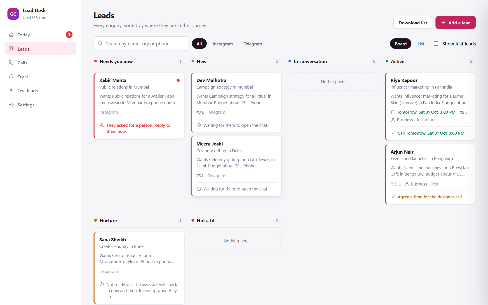
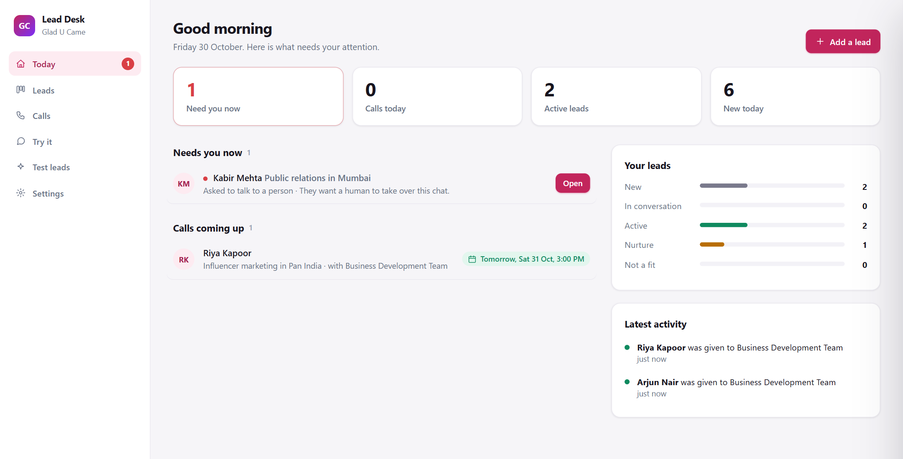

Every DM answered in seconds, every enquiry in one place, every task chased. Built for influencer marketing and management agencies.
A brand asks about a campaign at 11 pm. The reply comes the next afternoon, and by then they have messaged someone else.
Brands, creators asking about paid or barter, vendors, press and job seekers. Your team sorts them by hand.
How many brands wrote this week? Which channel sends the most? Who went quiet? Today, that means counting by hand.
An AI agent on your agency’s Instagram. It replies in your voice, qualifies brands, sorts creators and press, books the intro call, and steps back when your team joins the chat.
One profile per brand or creator, with the full chat, budget, city, timeline, stage and booked call. Your team opens it each morning and knows who to call first.
A Telegram assistant that turns the founder’s instructions into tasks, assigns them by working hours, chases the team and flags anything running late.
Next phase: WhatsApp, website chat and website form feed the same CRM, so every enquiry is counted in one place.
Any hour, any day. A reply goes out in about 11 seconds.
Project type, city, budget and timeline, asked one question at a time.
Brand, creator, press or existing client. Each goes to the right person.
Inside your call hours. Your team gets a short summary and closes it.
It never quotes fees, confirms times it was not given or promises results. When unsure, it says your team will confirm and raises a task.

Anyone who asked for a person floats to the top in red.
Time, owner and a one-line brief on every card.
Built mobile first, so the team can use it between meetings.
Tone, phrases and emojis tuned from your own DMs. A second AI proofreads every reply before it sends.
If someone asks for a human, or your team has replied, the agent stops on that chat.
Creators are tagged paid, barter or undecided, and handled inside the limits you set.
It only cites facts you approved: pricing, campaigns, awards. Nothing invented.
It reads the full chat history before each reply, so nobody repeats themselves.
A daily record of chats handled, mistakes caught and fixes shipped.
The founder talks to Nia on Telegram, in plain language. Nia turns it into tasks and runs the follow-through.
Assigns each task to the right person by working hours.
Checks in about every three working hours, and again before a deadline.
Handles blockers by looking in the shared business notes first.
Closes a task only after proof is checked: a photo, PDF or link.
A live board of what is done, what is late and why.
An alert within a minute of a missed deadline.
Each team member sees only their own context.
median reply time on Instagram
customer messages read in six days
past chats loaded as the agent’s memory
automatic tests run before every update
Glad U Came is a PR and influencer agency in Mumbai. We measured every conversation honestly, fixed each slip within a day, and report the same record daily.
| By | Examples |
|---|---|
| Channel | Instagram, WhatsApp, website chat, form |
| Type | Brand, creator, press, other |
| Stage | New, in conversation, active, won, nurture |
| Period | Per day, week and month |
So “how many brands wrote this week?” takes a second to answer.

Your pricing, barter rules, tone and call hours go into the agent. Past chats become the first CRM profiles.
The Instagram agent and Lead Desk run on your account, with a daily report.
WhatsApp, website chat and form join the same CRM. Team walkthrough.
A review call, fixes within the same week, and the record of what changed.
What we need from you: access to your Instagram business account, one short questionnaire, and a 30 minute call.
clients across 6 industries
hours saved for clients every month
saved for our clients
One operating system for a 700-person BPO, from the dialer to client reporting.
The full mainnet product behind ZERO, a zero-person company.
A website assistant that answers from the studio’s own facts and hands qualified leads to the team.
Give us a week of your Instagram DMs. We will show you what the system would have replied, and what it would have counted.